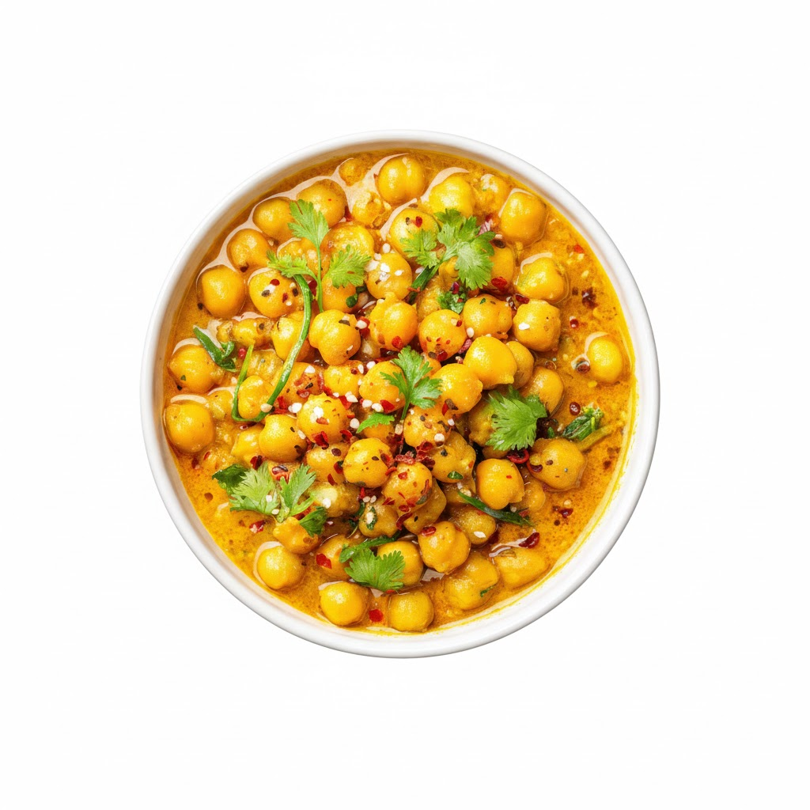

Home
Chotpoti

Description
Unlike many other dishes, Chotpoti is native to the Bengal region. Its name translates to "tangy burst" or "spicy," reflecting its bold flavors. It evolved as a quintessential street food, using affordable local ingredients like dried yellow peas (dabli), tamarind, and potatoes. Over generations, it has grown from a simple roadside snack into a cultural staple served at weddings and festivals across Bangladesh.
Ingredients
- Potatoes
- Chickpeas
- Yellow peas
- Onion
- Cucumber
- Green chilies
- Tamarind pulp
- Chaat masala
- Roasted cumin powder
- Puffed rice (muri)
- Boiled egg (optional)
Steps
- Boil potatoes, chickpeas, and yellow peas
- Dice potatoes and chop vegetables
- Prepare tamarind water with spices
- Mix all ingredients in a large bowl
- Add tamarind spice mixture and toss well
- Let flavors blend for 10 minutes
- Serve in bowls with puffed rice (muri) on top
- Garnish with chopped egg and coriander leaves